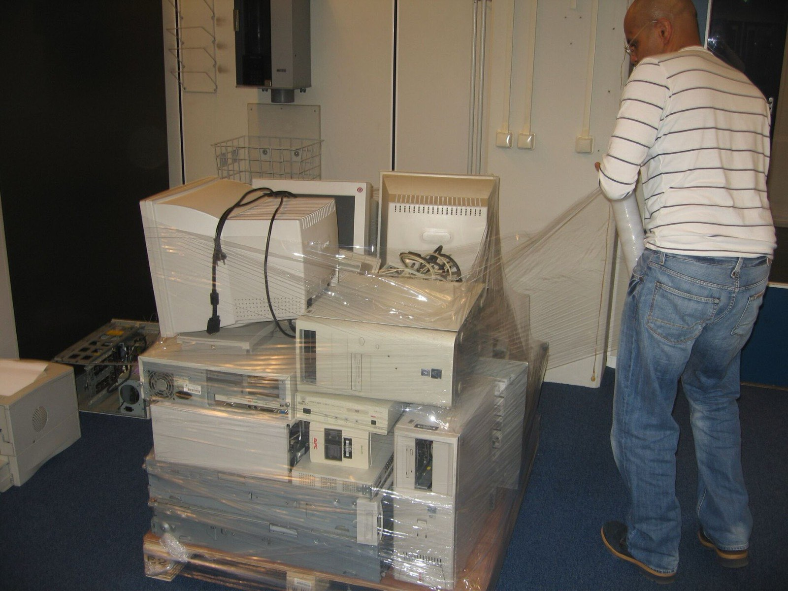
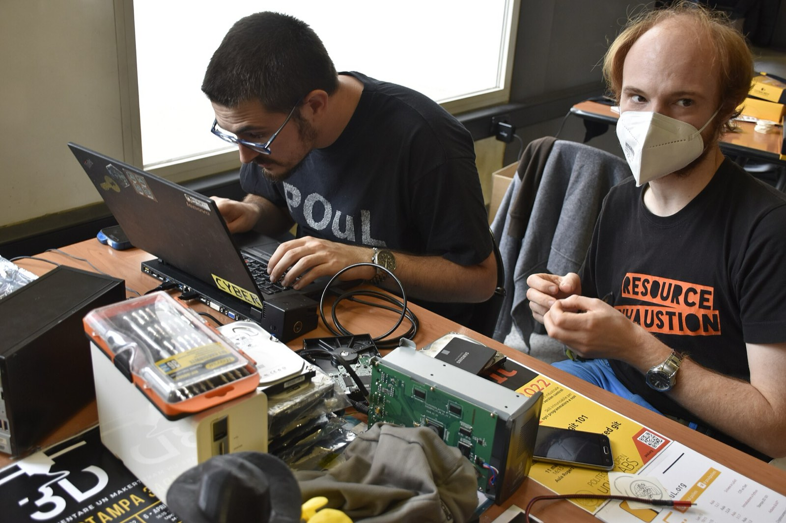

Retiring company laptops?
We collect them, wipe every drive, and put them back to work in Toronto. Give 10 or more and pickup is free.

What your company gets
Everything an IT or sustainability team needs to sign off on a donation.
Free pickup
For 10 or more similar, working computers under 8 years old. Smaller or mixed batches are collected from $60, and drop-off is always free.
Data-wipe certificate
Every drive listed by serial number with the wipe method and result, following the NIST SP 800-88 guideline. Ready for your audit file.
Impact report
How many devices went back into use, the kilograms kept out of landfill, and the kinds of households that received them.
Recognition
Your company on our partners page and a thank-you post on our social channels, if you'd like one.
A reminder when you refresh
Tell us your hardware cycle and we'll get in touch before your next batch is retired.
How it works
- Tell us what you haveThe donation checker takes about 30 seconds and books the pickup.
- We collectOn a Wednesday or Thursday, from your office or warehouse.
- We wipe and certifyEvery drive is erased and logged by serial number.
- You get your reportCertificate first, then the impact report once devices are back in use.

A certificate for every batch
This is what a company receives after a pickup of 25 laptops. Figures here are an example.
Certificate of data sanitization and impact
Issued to Example Company Inc.
| Device | Model | Serial | Method | Result |
|---|---|---|---|---|
| 1 | Lenovo ThinkPad T480 | SN-7KQ2M9XA | Overwrite and verify | Passed |
| 2 | Lenovo ThinkPad T480 | SN-3HV8WD4T | Overwrite and verify | Passed |
| 3 | Lenovo ThinkPad T480 | SN-PZ6R2NJE | Overwrite and verify | Passed |
And 22 more devices in the full report.
Pickup rates
Free for qualifying business batches. Otherwise, these are Free Geek Toronto's published rates.
Or skip the fee: drop-off at the shop is always free on Fridays and Saturdays, 12:15 to 4:45 PM.
| Area | Pickup from |
|---|---|
| Downtown Toronto | $60 |
| Midtown Toronto | $70 |
| Etobicoke or Scarborough | $85 |
| Peel or York Region | $100 |
| 10+ similar working computers | Free |
Partner levels
Proposed recognition for companies that give every year.
Supporter
Any batch
Data-wipe certificate and a thank-you on our partners page.
Partner
25+ a year
Everything above, plus a yearly impact report and a social post.
Champion
100+ a year
Everything above, plus a refresh-cycle reminder and a team visit to see the shop.